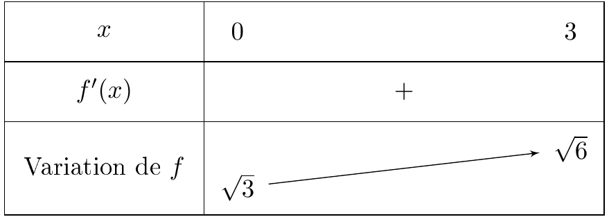

Chapitre 9 : Suite – Théorème de convergence
Terminale spécialité · Chapitre 9 — Théorème de convergence · cours de Frederik de Peyrelongue
I. Suite divergente
- Une suite croissante non majorée est divergente vers $+\infty$.
- Une suite décroissante non minorée est divergente vers $-\infty$.
Soit $(u_n)$ une suite croissante et non majorée, et soit $A>0$.
Comme $(u_n)$ n'est pas majorée, il existe $N\in\N$ tel que $u_N>A$.
Comme $(u_n)$ est croissante, pour tout $n\ge N$, on a $u_n\ge u_N$.
Donc, pour tout $n\ge N$, $u_n\ge A$.
Ainsi, pour tout $A>0$, il existe $N\in\N$ tel que, pour tout $n\ge N$, $u_n>A$ ; autrement dit,
La suite $(u_n)_{n\in\N}$ définie par $u_n=n^2$ est croissante et non majorée ; elle a donc pour limite $+\infty$.
II. Convergence monotone
- Toute suite $(u_n)_{n\in\N}$ croissante et majorée est une suite convergente.
- Toute suite $(u_n)_{n\in\N}$ décroissante et minorée est une suite convergente.
La suite $(u_n)$ définie, pour tout entier naturel $n$, par
\[ u_n=1+\frac{1}{n+1} \]est décroissante et minorée par $1$. Le théorème de convergence monotone permet alors d'affirmer que la suite $(u_n)$ est convergente.
La suite $(u_n)$ définie, pour tout entier naturel $n$, par
\[ u_n=5-\frac{1}{n+1} \]est croissante et majorée par $5$. Le théorème de convergence monotone permet alors d'affirmer que la suite $(u_n)$ est convergente.
III. Application de la continuité aux suites
Soient $f$ une fonction continue sur un intervalle $I$ et $(u_n)$ une suite d'éléments de $I$ convergeant vers $a\in I$. Alors
Soit $\varepsilon>0$ quelconque.
La fonction $f$ est continue sur $I$, donc continue en $a$ : il existe $\mu>0$ tel que, pour tout $x\in I$,
De plus, $\lim\limits_{n\to+\infty}u_n=a$ : il existe $N\in\N$ tel que, pour tout $n\ge N$,
Pour un tel entier $n$, on a $u_n\in I$ et $|u_n-a|<\mu$, donc
Conclusion : pour tout $\varepsilon>0$, il existe $N\in\N$ tel que, pour tout $n\ge N$,
Soit $f$ la fonction définie sur $\R$ par $f(x)=(x+1)^2$ et soit $(u_n)$ la suite définie, pour tout $n\in\N^*$, par
Alors
donc
Remarque. Ce théorème sera le plus souvent utilisé en contre-exemple pour montrer qu'une fonction n'est pas continue.
IV. Théorème du point fixe
Soient $f$ une fonction définie et continue sur un intervalle $I$ telle que $f(I)\subset I$, et $(u_n)$ la suite définie par un réel $u_0\in I$ et, pour tout $n\in\N$, $u_{n+1}=f(u_n)$.
Si $(u_n)$ converge vers $\ell\in I$, alors $\ell$ est solution de l'équation $f(x)=x$.
On considère une fonction $f$ définie et continue sur un intervalle $I$ et à valeurs dans $I$. Soit $(u_n)$ une suite définie par un réel $u_0\in I$ et, pour tout $n\in\N$, $u_{n+1}=f(u_n)$.
Par le théorème d'unicité de la limite,
Par continuité de la fonction $f$, on a
donc
Remarque. $\ell$ n'est pas forcément l'unique solution de $f(x)=x$. Il faut alors écarter les solutions qui ne conviennent pas.
IV.1 Application
Soit $(u_n)$ la suite définie par
définie sur $[{-3}\,;\,+\infty[$.
- Résoudre $f(x)=x$ sur $[{-3}\,;\,+\infty[$.
- Étudier les variations de la fonction $f$.
Montrer par récurrence que
\[ \forall n\in\N,\qquad 0<u_{n+1}<u_n<3. \]- En déduire que la suite $(u_n)$ est convergente.
- Déterminer sa limite $\ell$.
IV.2 Correction
Résolution de $f(x)=x$.
Pour $x\in[{-3}\,;\,+\infty[$,
\[ f(x)=x \iff \sqrt{x+3}=x \Longrightarrow x^2=x+3 \iff x^2-x-3=0. \]Le discriminant vaut
\[ \Delta=1+12=13, \]donc
\[ x_1=\frac{1-\sqrt{13}}{2} \quad\text{et}\quad x_2=\frac{1+\sqrt{13}}{2}. \]En élevant au carré, nous avons perdu l'équivalence. Il faut donc vérifier les solutions. Or l'équation $\sqrt{x+3}=x$ impose $x\ge 0$ ; comme $x_1<0$ et $x_2>0$, seule $x_2$ convient. Ainsi
\[ S=\left\{\frac{1+\sqrt{13}}{2}\right\}. \]Variations de $f$.
La fonction $f$ est définie et continue sur $[{-3}\,;\,+\infty[$ et dérivable sur $]{-3}\,;\,+\infty[$.
Pour $x$ dans $]{-3}\,;\,+\infty[$,
\[ f'(x)=\frac{1}{2\sqrt{x+3}}>0. \]On obtient donc le tableau de variations suivant sur $[0\,;\,3]$ :

La fonction $f$ est strictement croissante sur $[0\,;\,3]$ et l'intervalle $[0\,;\,3]$ est stable, car
\[ f([0\,;\,3])=[\sqrt{3}\,;\,\sqrt{6}]\subset[0\,;\,3]. \]Démonstration par récurrence.
Soit la propriété
\[ P(n)\ :\qquad 0<u_{n+1}<u_n<3. \]Initialisation. Montrons la propriété $P(n)$ au rang $0$. On a $u_0=3$ et $u_1=\sqrt{6}$, donc
\[ 0<u_1=\sqrt{6}<u_0=3. \]La propriété $P(0)$ est vraie.
Hérédité. Soit $k\in\N$. Supposons la propriété $P(k)$ vraie et montrons qu'elle est vraie au rang $k+1$. D'après l'hypothèse de récurrence,
\[ 0<u_{k+1}<u_k<3. \]On applique la fonction $f$, qui est strictement croissante sur $[0\,;\,3]$ :
\[ f(0)<f(u_{k+1})<f(u_k)<f(3). \]Comme $f(0)=\sqrt{3}$, $f(u_{k+1})=u_{k+2}$, $f(u_k)=u_{k+1}$ et $f(3)=\sqrt{6}$, on obtient
\[ \sqrt{3}<u_{k+2}<u_{k+1}<\sqrt{6}<3, \]et donc, a fortiori,
\[ 0<u_{k+2}<u_{k+1}<3. \]La propriété $P(k+1)$ est vraie.
Conclusion. La propriété est initialisée au rang $0$ et est héréditaire ; d'après le principe de récurrence, elle est vraie pour tout entier naturel $n$ :
\[ \forall n\in\N,\qquad 0<u_{n+1}<u_n<3. \]Convergence de la suite.
La suite $(u_n)$ est strictement décroissante car, pour tout $n\in\N$,
\[ u_{n+1}<u_n. \]Elle est minorée par $0$ car, pour tout $n\in\N$,
\[ u_n>0. \]D'après le théorème de convergence monotone, la suite $(u_n)$ est convergente. Notons $L$ sa limite.
Détermination de la limite.
On a
\[ \begin{cases} u_{n+1}=f(u_n),\\[2pt] f \text{ est continue sur } I \text{ et } f(I)\subset I,\\[2pt] \lim\limits_{n\to+\infty}u_n=L. \end{cases} \]D'après le théorème du point fixe, $L=f(L)$. D'après la question 1, la seule solution possible est donc
\[ \boxed{L=\frac{1+\sqrt{13}}{2}}. \]